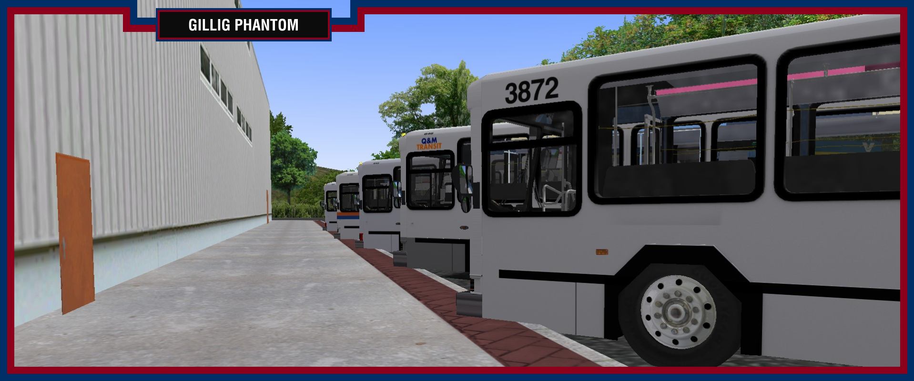

| | | | | |||||
October 24th, 2018
• The Gillig Advantage has received a minor update.
CHANGELOG:
Version 0.6.3.1 (10/24/18)
-Added templates for all models.
Version 0.6.3 (10/22/18)
-Changed Voith gear selector texture.
-Reversed UV maps of mirrors so they appear in the right place.
-Changed ISL EPA 2004 sounds again.
-Changed camera views in some buses.
October 22nd, 2018
• Because of an unexpected release of the Flxible Metro, it will no longer be updated.
October 9th, 2018
• After about two and half months, this page has reached 8,000 views. Thanks!
September 21st, 2018
• After about two months, this page has reached 6,000 views. Thanks!
September 9th, 2018
• After about a month and a half, this page has reached 5,000 views. Thanks!
September 8th, 2018
• The Gillig Phantom has been updated. Please check the email associated with your PayPal. If it's not there, fill out this form
September 2nd, 2018
• New Era Transit has been released. Go download it now!
August 27th, 2018
• After about a month of being up, this site has reached three thousand views. Thanks!
August 25th, 2018
• The Gillig Phantom can now be purchased again.

August 11th, 2018
• Some new pictures of the Flxible Metro E. The current plan is that it be available in an update for the Flxible Metro
Along with a suburban (A single door) Flxible.

| 
|
August 5th, 2018
• After about a week of being up, this site has reached one thousand views. Thanks!
July 27th, 2018
• New Era Transit has entered beta testing! Scheduled release is set for August. For latest updates, join the Discord server!

July 24th, 2018
• New Era Transit is projected to be released in August. For latest updates, join the Discord server!
July 4th, 2018
• As of today, the LFS, RTS, MCI D4500, Xcelsior, Phantom, and Advantage are no longer available on Porais Studios.
June 22nd, 2018
• The Flxible Metro has been updated! Please check your accounts for the updated file version.